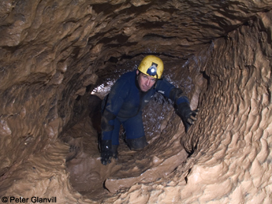

Sof Omar Caves is the longest cave in Ethiopia at 15.1 kilometres (9.4 mi) long. When surveyed in 1972, it was the longest cave in Africa. Since then explorations in Algeria (Rhar Bou Ma’za - the Tafna River Cave 18.4 km) and Madagascar (Ambatoharanana - Crocodile Cave 18.1 km) have overtaken it. It is situated to the east of Robe, in the Bale Zone of the Oromia Region in southeastern Ethiopia, through which the Weyib River (Gestro River) flows. It sinks at the Ayiew Maco entrance and reappears at the Holuca resurgence 1 kilometre (0.62 mi) away. According to tradition Sof Omar was the name of a Muslim holy man who lived in the area and Ayiew the name of his daughter. Maco and Holuca are local names for 'name' and "cave", respectively. Long a religious centre, it is sacred both to Islam and the local Oromo traditional religion. The caves are known for their many pillars, particularly in the "Chamber of Columns".
History of exploration
The explorer Arthur Donaldson Smith recorded his visit to the cave in 1894. An Italian expedition also visited in 1913. In 1934, Henri Breuil conducted archaeological investigations in the area. The Italians almost certainly visited the cave during the Italian occupation of Ethiopia, but apparently none of these early explorers made a through trip from Ayiew Maco to Holuca.
In 1967, Eric Robson, Chris Clapham and Kabir Ahmed explored and surveyed the cave, recording 8 km of passage. Following this the Ethiopian Tourist Board published a brochure about the cave. Although the area was not easily accessible and the organized adventure tourist industry did not yet exist, a few intrepid visitors made the trip to the then remote cave.
In February 1971 Professor Théodore Monod of the Muséum national d'histoire naturelle in France, Bill Morton (ex Manchester University Speleological Society caver), a geologist at Haile Selassie I University, and Ato Mezmure Hailemeskale recorded another 1 km new passages to the known cave.
DescriptionThe cave is formed along a network of joints: one set runs approximately north to south and the other east to west. This zig-zag of passages runs in an approximately southeasterly direction. Sof Omar has 42 entrances, but generally only four are useful for gaining entranceEntering the cave via either of the Village Entrances the visitor passes a shrine used by the locals. The Ayiew Maco Series is a set of interconnecting passages of varying in width between 1 m and 10 m. Several can be passed through to the pebble beach on the left bank of the river. A less complex series of passages exists on the right bank. These probably connected to those on the left bank until severed by the vadose action of the Web cutting the river passage deeper.The Web river disappearing into the Ayiew Maco entrance of Sof Omar Caves. The dry valley, Sof Omar Village and Village Entrances are off to the left.
The Chamber of Columns is a unique feature in the world of caves. It looks like a wide passage leaving the Web before sweeping back to the river about 100 m downstream. The passage circumnavigates a cluster of thick columns densely packed in the centre of chamber. The Railway Tunnel and Molossadie Passage enter the chamber from the north.
The river passage continues from the Chamber of Columns meandering for about 200 m to the Big Rapids. This striking feature is formed from a jumble of huge boulders, well worn by the actions of the river. The river passage continues around a curve for about 250 m before flowing around a massive boulder into the sunlight at the Holuca Resurgence. The Web continues running through a canyon. About 250 m downstream the dry valley appears on the left bank.
The left side of the canyon from the resurgence to the dry valley is riddled with passages breaking out into the canyon walls, forming many of the unusable entrances to the cave. Most of these are small passages exposed as the river cut its way down. The exception is the 25 m wide Great Hall that follows the north – south joint pattern breaking into the canyon at the resurgence. Hidden at the end of the Great Hall behind boulders is the hard-to-find Chameleon Passage. This runs along the east–west joint pattern. Some small passages lead from Chameleon to Blank Passage and back to the Big Rapids. Several small passages run from Blank Passage to Boulder Chokes.
The Holuca Resurgence: The fallen boulder is the size of a room. It shows the severity of the collapse in the cave. The lack of erosion indicates this was a relatively recent event.
The area surrounded by the river, Great Hall, Chameleon and Blank Passage, contains a criss-cross labyrinth of passages. Two of the most significant, Bill's Passage and Tautology Passage, run between the river and the Great Hall. These are high rift passages, and climbing them gives access to the 35 m long Balcony that overlooks the Big Rapids 7 m below.
Link Passage is a narrow rift passage that links back to the Chamber of Columns. A series of small passages at two levels leave Link Passage and heads towards the river passage. One of these leads into the wide Blind Passage, which also emerges into the Chamber of Columns. The upper passage is a tight crawl into the pretentiously named Wembley Stadium. This passage is formed in a fault. The survey of the British expedition in 1972 showed that the Wembley Fault extended from a right bank passage on the river to Wembley Stadium, Mudwall and Rimstone Passages.
The shakehole on the plateau is centred on the Wembley Fault line. Obviously the fault played a significant role in the major collapse that created the shakehole. The underground debris from the collapse forms the Big Rapids and is responsible for the boulder chokes seen near Blank Passage.

Back to top